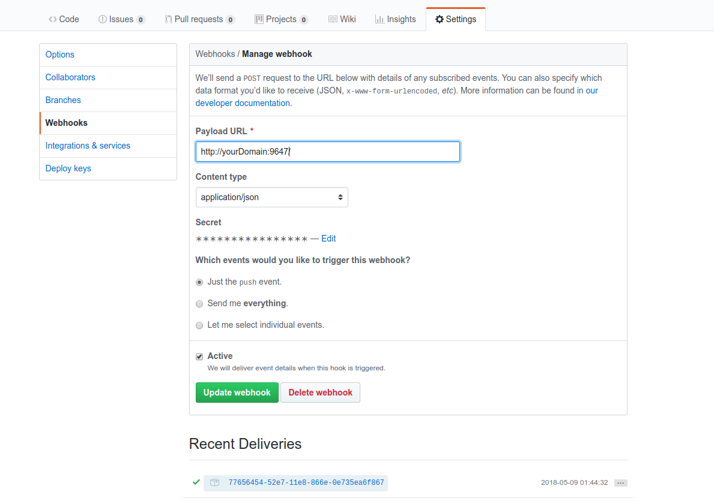
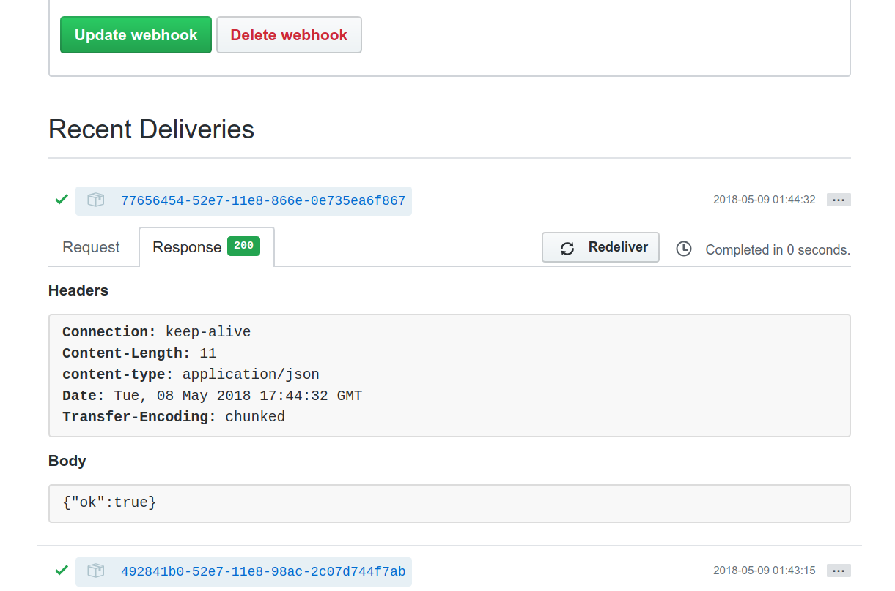

2018-05-10
Webhooks 允许你在 Github 上订阅确定的事件（pull/push 等操作事件），当 Github 上发生了相关的事件时，会向你指定 URL 发送消息（HTTP POST）。所以我们可以通过监听来自 Github 的事件来触发相关操作。比如，当 Github 上的项目有更新时，在我们的服务器上触发脚本执行，从 Github 上拉取最新文件立即更新网站，甚至直接拉取最新代码，在服务器上自动构建，运行最新版本的应用。
博客自动更新原理：当将博客最新内容推送到 Github 上后，Github 会发送消息给服务器，服务器收到消息后立即从 Github 拉取最新页面以达到及时更新博客的目的。
我现有的条件： - 博客内容已经托管在 Github上。 - 一台 VPS，运行着自建的博客。
还需要做的事： 1. 创建脚本文件（从 Github 上拉取网页）。 2. 在服务器创建服务，监听来自 Github 的消息，收到消息后立即执行脚本。 3. 在 Github 项目（托管的博客内容）上配置好 Webhooks。
VPS 服务器环境：Debian 9
简单，只实现拉取最新文件功能。“/var/www/blogPages”是博客文件目录。 updatePages.sh
#! /bin/bash
cd /var/www/blogPages
git pull origin master
可以根据自己的喜好，利用 Python、Ruby、PHP等工具来创建服务，这里是用 Nodejs 来实现。
apt update
curl -sL https://deb.nodesource.com/setup_10.x | bash -
apt install -y nodejs
npm install github-webhook-handler
npm install -g forever
- 为了方便直接采用了第三方库：github-webhook-handler 来处理来自 Github 的相关请求。 - 因为在 server.js 中使用 require 形式，所以不能全局安装 github-webhook-handler（带参数 -g），否则会报错。 - forever 用来管理 Nodejs 服务，可以使应用在后台运行。
var http = require('http')
var spawn = require('child_process').spawn
var createHandler = require('github-webhook-handler')
var handler = createHandler({
path: '/',
secret: 'kjekljt03w6535' //这里是随机字符串，与 Github 上的配置保持一致
})
function runCommand(cmd, args, callback) {
var child = spawn(cmd, args)
var response = ''
child.stdout.on('data', function(buffer) {
response += buffer.toString()
})
child.stdout.on('end', function() {
callback(response)
})
}
http.createServer(function(req, res) {
handler(req, res, function(err) {
res.statusCode = 404
res.end('no such location')
})
}).listen(9746)
handler.on('error', function(err) {
console.error('Error:', err.message)
})
handler.on('push', function(event) {
console.log('Received a push event for %s to %s',
event.payload.repository.name,
event.payload.ref)
runCommand('sh', ['./updatePages.sh'], function(txt) {
console.log(txt)
});
})
forever start server.js
主要配置 Payload URL 和 secret（与 server.js 中的 secret 保持一致） 
配置 Webhooks 后，在相同的页面里点击“Redeliver”按钮测试一下。  然后就可以往 Github 项目推送更新，验证一下。
Comments